Johannes
Johannes Gensfleisch zur Laden zum Gutenberg was a German blacksmith, goldsmith, printer, and publisher who introduced printing to Europe. His introduction of mechanical movable type printing to Europe started the Printing Revolution and is widely regarded as the most important invention of the second millennium, the seminal event which ushered in the modern period of human history.[1] It played a key role in the development of the Renaissance, Reformation, the Age of Enlightenment, and the scientific revolution and laid the material basis for the modern knowledge-based economy and the spread of learning to the masses.[2]
Gutenberg in 1439 was the first European to use the printing press and movable type in Europe. Among his many contributions to printing are: the invention of a process for mass-producing movable type; the use of oil-based ink for printing books;[3] adjustable molds;[4] mechanical movable type; and the use of a wooden printing press similar to the agricultural screw presses of the period.[5] His truly epochal invention was the combination of these elements into a practical system that allowed the mass production of printed books and was economically viable for printers and readers alike. Gutenberg's method for making type is traditionally considered to have included a type metal alloy and a hand mould for casting type. The alloy was a mixture of lead, tin, and antimony that melted at a relatively low temperature for faster and more economical casting, cast well, and created a durable type.

Johannes
·McLuhan 1962; Eisenstein 1980; Febvre & Martin 1997; Man 2002
·Soap, Sex, and Cigarettes: A Cultural History of American Advertising By Juliann Sivulka, page 5
·http://www.fonts.com/content/learning/fontology/level-4/influential-personalities/gutenbergs-invention
·Hanebutt-Benz, Eva-Maria. "Gutenberg and Mainz". Retrieved 2006-11-24.
·"Lienhard, John H". Uh.edu. 2004-08-01. Retrieved 2012-08-15.
·Wallau, Heinrich. "Johann Gutenberg". The Catholic Encyclopedia. Vol. 7. New York: Robert Appleton Company, 1910. [1]
·Martin, Henri-Jean (1995). "The arrival of print". The History and Power of Writing. University of Chicago Press. p. 217. ISBN 0-226-50836-6.
·Dudley, Leonard (2008). "The Map-maker's son". Information revolutions in the history of the West. Northampton, MA: Edward
·78. ISBN 978-1-84720-790-6.
·"Gutenberg und seine Zeit in Daten (Gutenberg and his times; Timeline)". Gutenberg Museum. Retrieved 2006-11-24.
·Burke, James (1978). Connections. London: Macmillan Publishers. p. 101. ISBN 0-333-24827-9.
·Burke, James (1985). The Day the Universe Changed. Boston, Toronto: Little, Brown and Company. ISBN 0-316-11695-5.